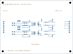

29 + 4mounted parts plus board holes
143routed track segments
56through vias
ERC/DRC 0encoded source violations
14open evidence holds
Top copper and legend
The blue/gold presentation does not replace native KiCad. Field copper stays left, compute copper stays right, and only UOBS1/UOBS2 span the isolation corridor.

Physical placement
| Reference | Footprint | X, Y mm | Rotation |
|---|---|---|---|
| CDEC1 | Murata_GRM21_Reflow_Nominal | 68.000, 49.000 | 90.000 |
| CDEC2 | Murata_GRM21_Reflow_Nominal | 68.000, 34.000 | 90.000 |
| CFI1 | TDK_CGA3_Reflow_Nominal | 49.000, 61.000 | 90.000 |
| CFI2 | TDK_CGA3_Reflow_Nominal | 49.000, 50.000 | 90.000 |
| CFI3 | TDK_CGA3_Reflow_Nominal | 49.000, 45.000 | 90.000 |
| CFI4 | TDK_CGA3_Reflow_Nominal | 49.000, 35.000 | 90.000 |
| JFIELD1 | Phoenix_MKDS_1_6_3P5_1751280 | 6.000, 45.000 | 90.000 |
| JLOGIC1 | Phoenix_MKDS_1_6_3P5_1751280 | 114.000, 45.000 | 90.000 |
| MH1 | MountingHole_3.2mm_M3 | 4.500, 4.500 | 0.000 |
| MH2 | MountingHole_3.2mm_M3 | 115.500, 4.500 | 0.000 |
| MH3 | MountingHole_3.2mm_M3 | 4.500, 85.500 | 0.000 |
| MH4 | MountingHole_3.2mm_M3 | 115.500, 85.500 | 0.000 |
| RPD1 | Panasonic_ERJ6_Reflow_Nominal | 86.000, 60.000 | 90.000 |
| RPD2 | Panasonic_ERJ6_Reflow_Nominal | 86.000, 49.000 | 90.000 |
| RPD3 | Panasonic_ERJ6_Reflow_Nominal | 86.000, 45.000 | 90.000 |
| RPD4 | Panasonic_ERJ6_Reflow_Nominal | 86.000, 34.000 | 90.000 |
| RSN1 | Panasonic_ERJ6_Reflow_Nominal | 42.000, 57.000 | 0.000 |
| RSN2 | Panasonic_ERJ6_Reflow_Nominal | 42.000, 53.500 | 0.000 |
| RSN3 | Panasonic_ERJ6_Reflow_Nominal | 42.000, 42.000 | 0.000 |
| RSN4 | Panasonic_ERJ6_Reflow_Nominal | 42.000, 38.500 | 0.000 |
| RSO1 | Panasonic_ERJ6_Reflow_Nominal | 76.000, 57.000 | 0.000 |
| RSO2 | Panasonic_ERJ6_Reflow_Nominal | 76.000, 52.000 | 0.000 |
| RSO3 | Panasonic_ERJ6_Reflow_Nominal | 76.000, 42.000 | 0.000 |
| RSO4 | Panasonic_ERJ6_Reflow_Nominal | 76.000, 37.000 | 0.000 |
| RTH1 | Vishay_MMA0204_IPC_Reflow | 22.000, 57.000 | 0.000 |
| RTH2 | Vishay_MMA0204_IPC_Reflow | 22.000, 53.000 | 0.000 |
| RTH3 | Vishay_MMA0204_IPC_Reflow | 22.000, 42.000 | 0.000 |
| RTH4 | Vishay_MMA0204_IPC_Reflow | 22.000, 38.500 | 0.000 |
| RW2 | Vishay_CRCW1210_Reflow | 31.000, 49.000 | 0.000 |
| RW3 | Vishay_CRCW1210_Reflow | 31.000, 45.000 | 0.000 |
| RW4 | Vishay_CRCW1210_Reflow | 31.000, 35.000 | 0.000 |
| UOBS1 | TI_DBQ0016A_Example_Land | 60.000, 55.000 | 180.000 |
| UOBS2 | TI_DBQ0016A_Example_Land | 60.000, 40.000 | 180.000 |
Fourteen holds remain open
| ID | Scope | Evidence required |
|---|---|---|
| OBS2-HOLD-001 | SR1 Y32/H1 | Measure exact received H1 current over accepted voltage/temperature, identify terminals/internal circuit and prove useful indication at the 17.8 V low screen |
| OBS2-HOLD-002 | Y32 application | Qualified review of aggregate current, short/open faults, leakage, startup and noninterference with SR1/SRA1 diagnostics |
| OBS2-HOLD-003 | K1/K2 contacts | Received voltage/current, bounce, contamination, life and fault testing with the exact 2.70 kohm shunts |
| OBS2-HOLD-004 | EMC/protection | Accept the Type-3 network, 10 nF DC-bias envelope, cable environment, surge/ESD/EFT plan and any additional protection |
| OBS2-HOLD-005 | PCB DFM | Selected fabricator accepts four-layer stackup, material, copper, hole, mask, legend, annular ring, impedance-not-required statement and board drawing |
| OBS2-HOLD-006 | Assembly process | Selected assembler accepts all land patterns, paste apertures, stencil, solder alloy/profile, MELF handling, cleaning, AOI and rework controls |
| OBS2-HOLD-007 | Grounding/insulation | Accept field/compute zones, isolation corridor, floating SUB copper, creepage/clearance, enclosure, PE/parasitic and back-power behavior |
| OBS2-HOLD-008 | Raspberry Pi | Select four conflict-free GPIOs and exact physical pins; verify thresholds, pulls, cable, boot, brownout and power-loss behavior |
| OBS2-HOLD-009 | Harness | Release exact wire, ferrules, labels, strip length, torque, routing, retention, strain relief, separation and service access |
| OBS2-HOLD-010 | Mounting/enclosure | Select hole hardware, standoffs, enclosure, panel datums, keepouts, access, airflow and inspection method |
| OBS2-HOLD-011 | First article | Inspect board dimensions, holes, lands, isolation corridor, continuity, shorts, residue and component identity/orientation before any connection |
| OBS2-HOLD-012 | Fault injection | Execute open, short, cross-short, stuck-high/low, return loss, logic brownout, back-power and source-loss cases on an authorized isolated fixture |
| OBS2-HOLD-013 | Thermal | Measure worst-case resistor/device/connector temperature in the selected enclosure and accepted duty/environment |
| OBS2-HOLD-014 | Safety boundary | Qualified reviewer confirms observations remain diagnostic-only and cannot command, restore or preserve motion |